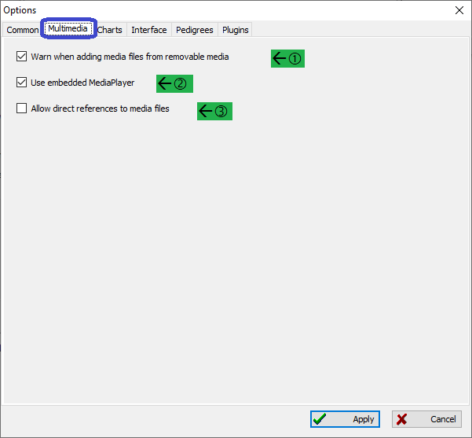
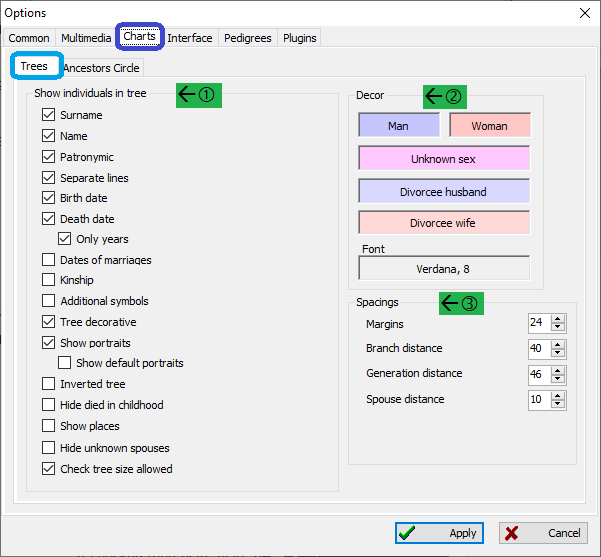
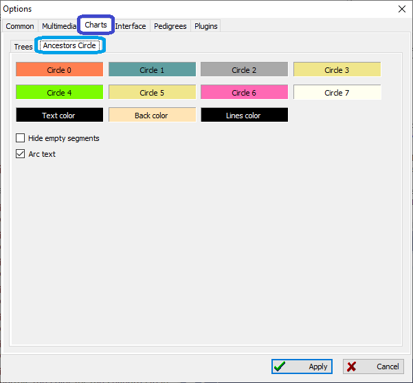
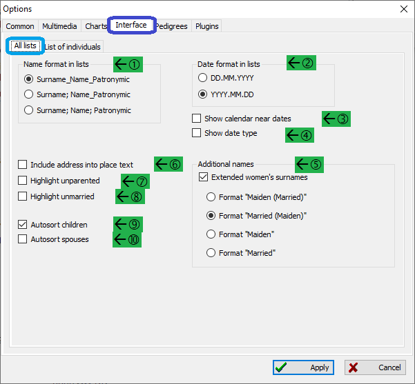
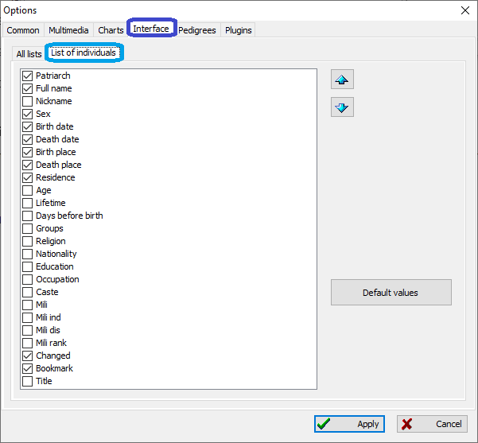
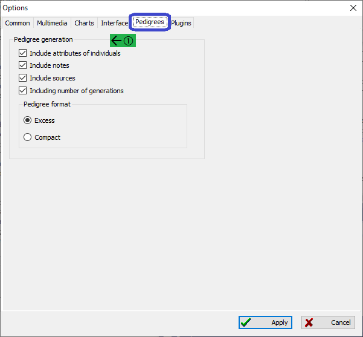

Options
Common, Multimedia, Charts, Interface, Pedigrees, Plugins
Common
![[Common options dialog]](images/dlgOptions-Common.gif)
- Internet
Set up these settings when you access the Internet via a proxy.
- Use proxy
Check this if using a proxy to access the Internet
- Server
This is the name of the server.
- Port
This is the port number to use.
- Login
This is the login name.
- Password
The password needed to access the proxy server.
- Files backup
Controls if backups of the current database are performed.
- not
If selected then no backups of the database is performed.
- only previous file
If selected then only a single backup is made each time the database is saved.
- backup each file revision
If selected then every time the database is saved a new backup is created.
- Autosave every
If checked then the database is saved every N minutes.
- Other
Here are miscellaneous options that control how the startup process is handled.
- Show tips on startup
If checked then useful tips will be shown at startup such as birthday reminders.
- Load at startup recent opened files
If checked then the last file used is automatically opened.
- Automatically check for updates
If checked then GEDKeeper will check to see if a new version is available. If found then a message is displayed.
- Language
Controls which language will be used in the interface. Restarting is not required, but you must click "Apply" for this to take effect.
- Geocoder
Controls which mapping system is used for maps generated.

- Warn when adding media files from removable media.
If checked then a warning will be shown if a media file is on removable media such as a CD, DVD, or USB stick.
- Use embedded MediaPlayer
If checked then GEDKeeper's media player will be used. If unchecked then the system default view for media is used.
- Allow direct references to media files
If checked then media files are not copied to the subdirectory where the database is kept. Instead a direct reference to where the media is located is used. Note: this could make transferring your database to another location more difficult.
Charts
Trees
Controls characteristics of tree charts.

- Show individuals in tree
Specifies characters for any tree charts.
- Surname
If checked then blah, blah, blah
- Name
If checked then blah, blah, blah
- Patronymic
If checked then blah, blah, blah
- Separate lines
If checked then blah, blah, blah
- Birth date
If checked then blah, blah, blah
- Death Date
If checked then blah, blah, blah. If checked then you can choose to only show the years.
- Date of marriages
If checked then blah, blah, blah
- Kinship
If checked then blah, blah, blah
- Additional symbols
If checked then blah, blah, blah
- Tree decorative
If checked then blah, blah, blah
- Show portraits
If checked then blah, blah, blah. If checked you can also choose to use a default portrait.
- Inverted tree
If checked then blah, blah, blah
- Hide died in childhood
If checked then blah, blah, blah
- Show places
If checked then blah, blah, blah
- Hide unknown spouses
If checked then blah, blah, blah
- Check tree size allowed
If checked then blah, blah, blah
- Decor
Controls what colors and font are used for generated charts.
- Man
Click here to choose the color for a person identified as a man.
- Woman
Click here to choose the color for a person identified as a woman.
- Unknown sex
If a sex was not identified, then this color will be used.
- Divorcee husband
A divorced husband (man) will be shown with this color.
- Divorcee wife
If the person is a divorced wife (woman) then this color will be used.
- Font
Controls which font is used for generated charts. Click here and a list of all available fonts on you system is shown.
- Spacings
Controls a set of spacings on the charts in points (dots)
- Margins
Specifies the margins on each side of the chart.
- Branch distance
Blah, blah, blah
- Generation distance
Blah, blah, blah
- Spouse distance
Blah, blah, blah
Ancestors Circle
Controls blah, blah, blah.

- Circle 0
Controls the color for the first circle.
- Circle 1
Controls the color for the second circle.
- Circle 2
Controls the color for the third circle.
- Circle 3
Controls the color for the fourth circle.
- Circle 4
Controls the color for the fifth circle.
- Circle 5
Controls the color for the sixth circle.
- Circle 6
Controls the color for the seventh circle.
- Circle 7
Controls the color for the eigth circle.
- Text color
Specifies the color of the text. Be sure it is not the same as "Back color".
- Back color
Specifies the background color for the text. Be sure it is not the same as "Text color".
- Lines color
Sets the color for all the lines that are drawn.
- Hide empty segments
Blah, blah, blah
- Arc text
If checked then the text is shown in an arc fashion instead of completely horizontal.
Interface
Controls characteristics of the user interface.
All lists
Controls characteristics for every list that is shown.

- Name format in lists
- Surname_Name_Patronymic
Blah, blah, blah
- Surname; Name_Patronymic
Blah, blah, blah
- Surname; Name; Patronymic
Blah, blah, blah
- Date formats in lists
- DD.MM.YYYY
Dates will be shown in the following order: day, month, then year. Each segment is separated by a period.
- YYYY.MM.DD
Dates will be shown in the following order: year, month, then day. Each segment is separated by a period.
- Show calendar near dates
Blah, blah, blah
- Show date type
Displays the type of date being used such as Gregorian, Jewish, etc.
- Additional names
- Extended women's surnames
Controls how women's names are displayed if they are married. As an example, we will use the name Jane whose maiden name is Smith and is now Johnson.
- Format "Maiden (Married)"
Example: Jane Smith (Johnson)
- Format "Married (Maiden)"
Example: Jane Johnson (Smith)
- Format "Maiden"
Example: Jane Smith
- Format "Married"
Example: Jane Johnson
- Include address into place text
If checked then the complete address of a place is shown (if available).
- Highlight unparented
If checked then persons who do not have parents will be highlighted.
- Highlight unmarried
If checked then persons who are not married are highlighted.
- Autosort children
If checked then when children are shown they will be automatically sorted by birth date.
- Autosort spouses
If checked then spouses are automatically sorted by marriage date.
List of individuals
Controls what person characteristics are shown and the order in which they are shown. To change the order, simply selected a characteristic and use the up and down arrows.

Pedigrees

- Pedigree generation
- Include attributes of individuals
Blah, blah, blah
- Include notes
If notes were associated with the pedigree then they will be shown.
- Includes sources
If one or more sources were identified then they will be shown.
- Include number of generations
Blah, blah, blah
- Pedigree format
- Excess
If selected then the pedigrees will show verbose information.
- Compact
If selected then blah, blah, blah
Plugins
This is a list of the plugins that are in use by GEDKeeper. This is for your reference only.
![[Plugins options dialog]](images/dlgOptions-Plugins.gif)